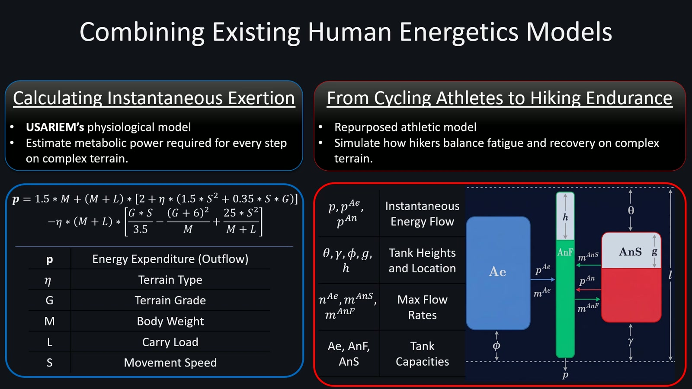
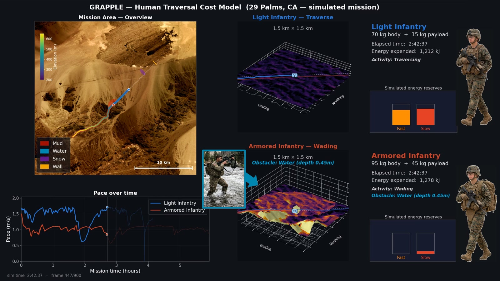
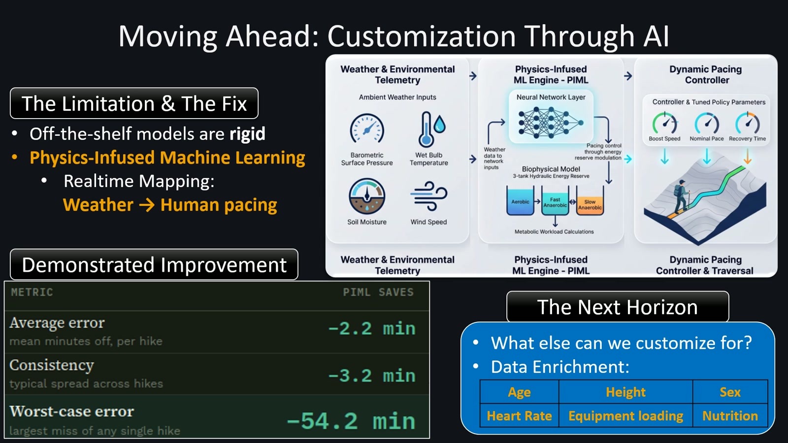

Research overview
Abstract
The human traversal module estimates movement time and energy expenditure across complex terrain. It combines an instantaneous metabolic workload model with a dynamic representation of fatigue and recovery. Body weight, carried load, speed, terrain grade, surface type, and environmental conditions inform the traversal cost. The presentation also describes physics-infused machine learning for adapting pacing to weather.
Research problem and inputs
A route for a dismounted person must account for more than distance. Slope, surface resistance, obstacles, carried equipment, and the ability to recover affect both the pace and the energy needed to complete a mission.
- Human factors
- Body weight, external load, movement speed
- Terrain factors
- Terrain type and grade
- Environmental inputs
- Surface pressure, wet-bulb temperature, soil moisture; the later learning diagram also includes wind speed
- Outputs
- Traversal time, energy expenditure, pace, and simulated energy reserves
Physiological model
The presentation combines a USARIEM physiological model of instantaneous exertion with an endurance model adapted from cycling. Metabolic power depends on body mass, carried load, movement speed, terrain type, and grade. Ascent increases metabolic demand, while descent introduces braking costs.
A three-tank hydraulic model represents aerobic, fast anaerobic, and slow anaerobic reserves. Energy flow, tank capacities, and maximum flow rates describe how exertion and recovery evolve during a traversal. The model therefore links local workload to the person’s changing capacity to sustain movement. [1, 1:00–1:15]
Obstacles and weather
The obstacle treatment uses activity expenditure from the Ainsworth Compendium as a modular input. The examples include wading and climbing. Surface resistance varies by terrain type, and weather can trigger dynamic surface reclassification.
The learning extension maps weather telemetry into pacing controls, including boosted speed, nominal pace, and recovery time. These controls interact with the energy-reserve model rather than replacing the physiological workload calculation. [1, 1:15–1:45; 2:45–3:00]
Simulated mission at 29 Palms
The demonstration compares light infantry: 70 kg body mass + 15 kg payload with armored infantry: 95 kg body mass + 45 kg payload. It displays terrain traversal, mud, water, snow, and a wall, alongside pace histories and simulated energy reserves. Water depth is labeled 0.45 m and the wall height 2.0 m.
The animation shows how the two profiles progress differently through the mission. Its elapsed times and accumulated energy values change throughout the sequence, so individual frames are illustrative states rather than aggregate evaluation statistics. This is explicitly a simulated mission. [1, 1:45–2:45]
Reported learning results and future customization
The final technical slide reports improvements from physics-infused machine learning: 2.2 minutes in average error, 3.2 minutes in typical spread across hikes, and 54.2 minutes in worst-case error. These describe prediction-error improvements per hike, not reductions in mission duration. The slide does not specify the dataset size or full comparison protocol.
Future customization directions listed in the presentation include age, height, heart rate, equipment loading, sex, and nutrition. These are presented as data-enrichment opportunities rather than demonstrated inputs to the reported model. [1, 2:45–3:00]
Research figures



Module demonstration
Full supplied presentation · 3:09. Chapter links open the video at the indicated point. The written sections above provide a companion description of the methods and demonstrations.
Sources and research context
- Human_video_2.mp4. Supplied GRAPPLE module presentation. Figures reproduced from the video; chapter times are approximate.
- ONR introduction slides. Program, research challenge, four-module workflow, and team; slides 1–4.
Results on this page are attributed to the supplied presentations. The materials do not include full benchmark protocols or bibliographic records for every component.

{kind=link}
{kind=link}
{kind=link}